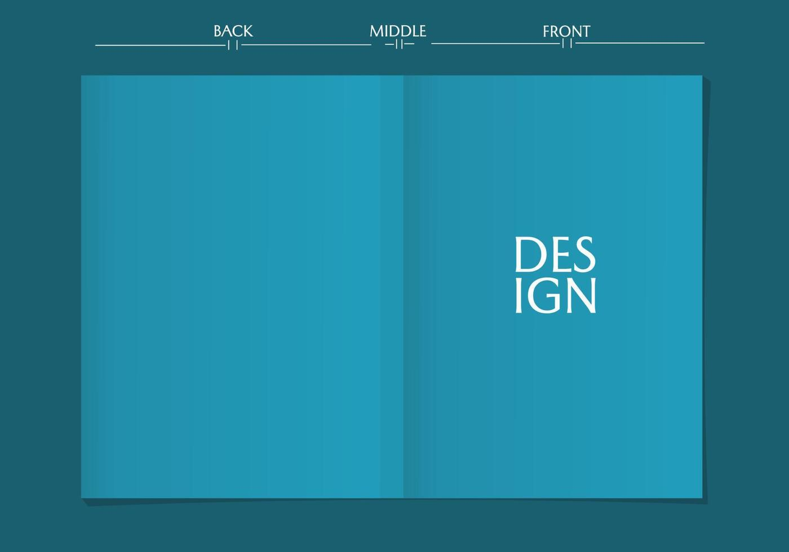
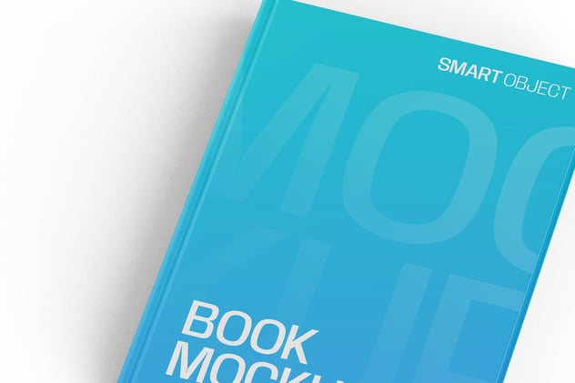

Samuel Ikani has developed a range of publications focused on evaluation systems, policy development, and evidence-based decision-making.

Building systems that measure what truly matters.

Designing policy systems that deliver results.
Turning research into actionable insights.
We conduct workshops and trainings to support professionals in:
Check out upcoming sessions and recorded webinars focused on policy, evaluation, and development systems.
We also collaborate with organizations to deliver custom webinar sessions.
Samuel Ikani is an engaging and insightful public speaker delivering keynote addresses across development and evaluation platforms.
Interested in inviting Samuel to speak? Contact here.